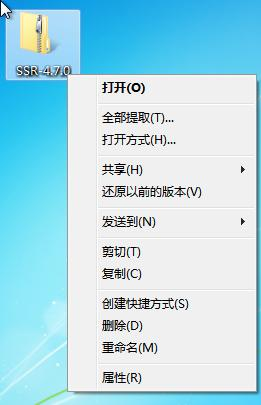
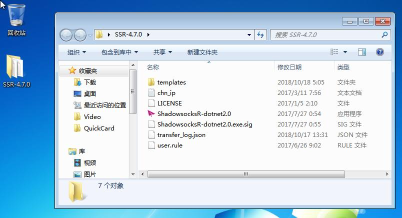
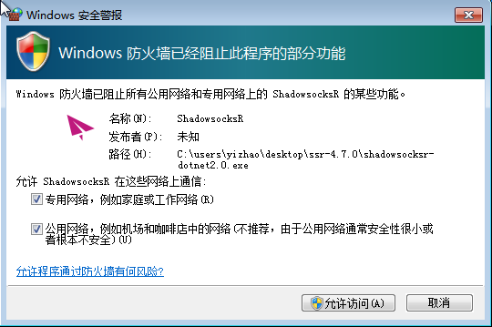
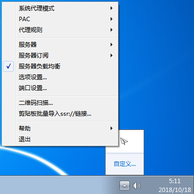
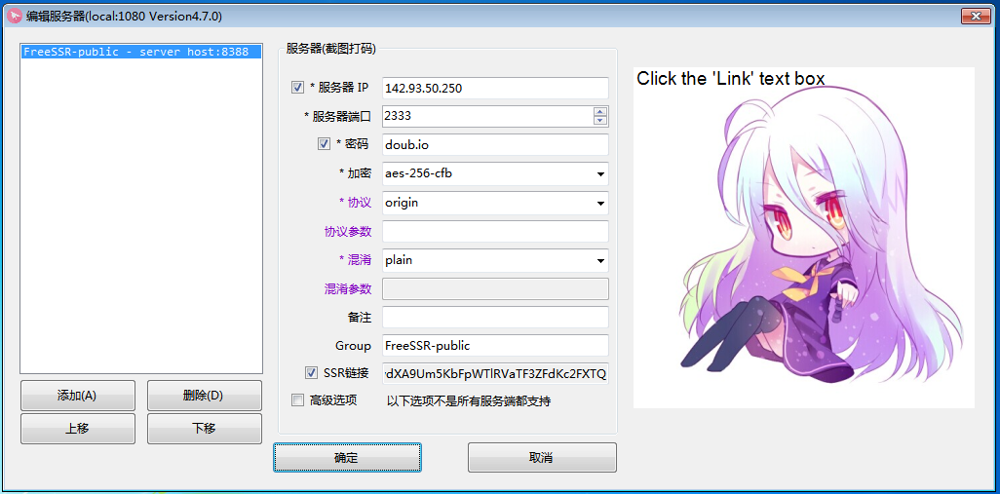
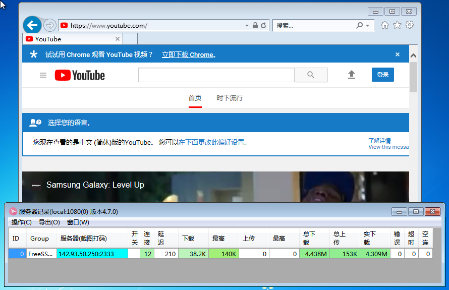
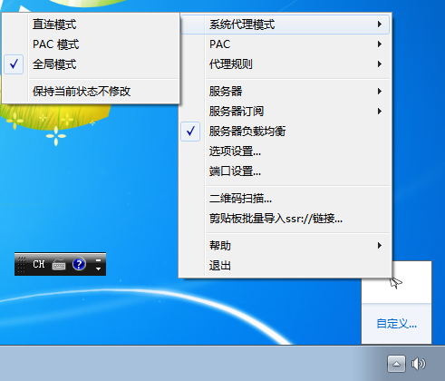

安卓翻墙 | 苹果翻墙 | [电脑翻墙] | 电脑网盘"
电脑用户翻墙步骤
第一步：下载影梭电脑版（1MB）
点击如下图标下载影梭软件压缩包并保存到桌面

第二步：鼠标右键点击下载的软件包，并选择“全部提取...”
在提示提取目标文件夹的对话框，使用默认值，点击提取。完成后确认文件夹存在。

第三步：删除下载的压缩包文件（图标带拉链的那个），确认您桌面上只有一个SSR文件夹。

第四步：双击文件夹中的红色纸飞机图标，忽略任何签名警告，并允许访问防火墙。

第五步：在任务栏找到影梭的纸飞机图标并用鼠标右键打开菜单

第六步: 选择菜单中的服务器－编辑服务器，填写如下内容，并选择确定关闭窗口
服务器：xxx.xxx.xxx.xxx (此处请填写有效每日油兔网址，网址被墙须及时更换新址)
端口：2333
密码：doub.io
加密(不变)：aes-256-cfb

第七步：打开浏览器，访问YouTube.com测试翻墙是否成功。您还可以使用菜单中的服务器－服务器连接统计观察翻墙服务器的速度

第八步：学会用菜单中的系统代理模式：选择全局模式打开梯子翻墙，选择直连模式关掉梯子不翻墙(图标变红)

附录
学会通过菜单从剪贴板批量导入ssr://连接
学会翻墙后，请学会使用电报软件以便更方便地获取更多翻墙服务器。安装包在此：
电报注册需要电话号码接受短信，并打开梯子翻墙。最好是用TextNow或者叮咚去注册一个北美的假电话号码，然后用这个号码注册telegram。如果不会注册，用大陆号码也可以，反正别人看不见你的号码的。 TextNow注册号码是免费的，但是全英文，看不懂的话就用翻译软件，不难。叮咚全中文，但是号码一年要13元人民币，微信支付宝都可支付。注册登录成功后先搜索@zh_CN进入中文汉化频道汉化您的界面，再到设置里面添加一个唯一用户名，把用户名私发给微信号wanggonging，拉您进群。